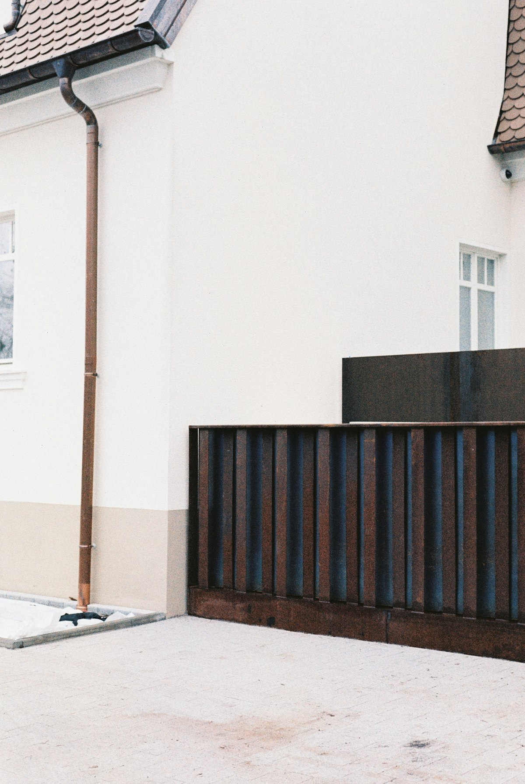

Case / Fence
道路からの視線をやわらげ、庭時間を過ごしやすく。
洗濯物やリビング前の見え方に配慮しながら、圧迫感が出すぎない高さと色味で目隠しフェンスを設置しました。

Point
高さだけでなく、風通しと家の雰囲気も合わせて検討。
目隠しは高ければ良いわけではありません。暮らし方に合わせて見え方を確認しながら決めます。
- 工事内容既存境界確認、フェンス設置
- 目安約12万円〜
- 期間約1日〜
Case / Fence
洗濯物やリビング前の見え方に配慮しながら、圧迫感が出すぎない高さと色味で目隠しフェンスを設置しました。

Point
目隠しは高ければ良いわけではありません。暮らし方に合わせて見え方を確認しながら決めます。